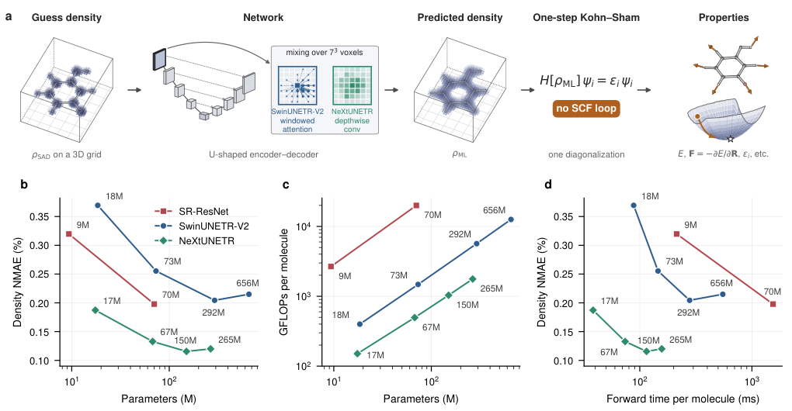
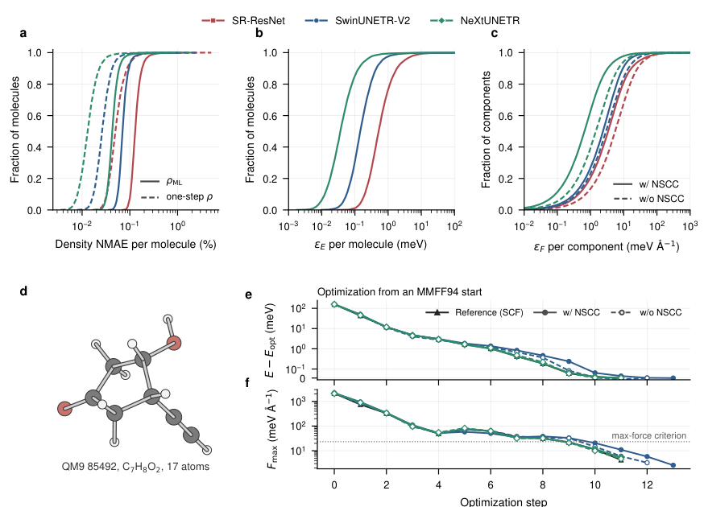
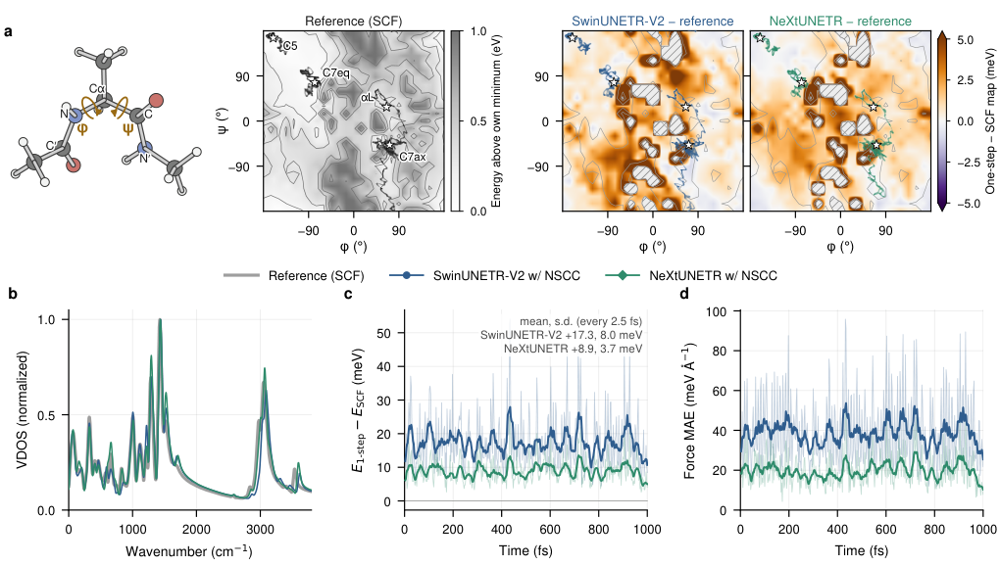
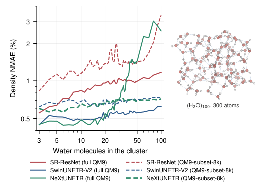

NeXtUNETR：把电子密度学到足够准，让一次 Kohn–Sham 求解接管自洽循环
论文原文 ↗论文：Transformer-inspired architectures make machine-learned electron densities accurate and transferable enough to bypass self-consistency
作者：Jeheon Woo，韩国高等科学院
来源：arXiv，2026-10-29 ·
DFT 计算最反复的一步，是根据试探电子密度建立 Kohn–Sham 哈密顿量、求解轨道、更新密度，再重复到自洽。结构优化和分子动力学每走一步，都要重新做这个循环。这篇论文提出：先用三维图像网络把廉价的原子密度叠加猜测修正得足够准确，再只对角化一次 Kohn–Sham 哈密顿量，同时取得能量、力、轨道及轨道能级。
研究的重点有两层：一是从计算机视觉借来的多尺度网络，能否把电子密度误差再降低到足以驱动量子化学计算；二是用预测密度计算的力，怎样成为同一个能量面的真实梯度，进而支持能量守恒的动力学。作者在 QM9 分子、几何优化、丙氨酸二肽动力学及几个迁移数据集上依次回答这两个问题。
把电子密度作为三维图像，从原子猜测走到电子结构

图1：密度修正、单步 Kohn–Sham 流程，以及不同网络的精度和计算量。
真实输入是原子种类、位置和电子数。首先，为每个元素预先得到自由原子的密度，把它们移到分子中相应原子的位置并相加，得到 SAD，即原子密度叠加猜测。它便宜、容易构造，但尚未反映分子成键后的电荷重排。这个猜测在均匀实空间网格上取值，形成一张三维单通道“图像”；每个体素的值是该位置的价电子密度。
网络预测的是对 SAD 的修正量。作者采用两个 U 形编码器—解码器：编码器逐级降低网格分辨率、增加特征通道，汇集不同空间尺度的信息；解码器逐级恢复分辨率，并通过跳跃连接取得早期的细节。修正量加回 SAD 后，用 ReLU 保持密度非负，再按已知价电子数整体归一化，得到预测密度 ρML。
两个网络的主要区别在于局部信息怎样混合。
- SwinUNETR-V2 在 7×7×7 体素窗口内使用自注意力：根据当前输入，计算哪些位置应更多地相互影响；相邻模块移动窗口，使窗口之间交换信息。
- NeXtUNETR 保留多尺度 U 形结构，用 ConvNeXt 模块代替注意力。它通过 7×7×7 的逐通道卷积混合空间邻域，再用逐点卷积混合特征通道。卷积核在训练结束后固定。
因此，标题中的“Transformer 启发”主要指多尺度结构和模块设计；表现最好的 NeXtUNETR 本身没有自注意力。大部分参数安排在较粗网格上，使增加网络容量的成本较低。在相同的 8,000 个 QM9 训练分子上，NeXtUNETR 在各个测试规模都最准确：约 6,750 万参数版本的密度误差为 0.133%，对应宽度的 SwinUNETR-V2 约 2.92 亿参数、误差 0.204%，前者浮点计算量约为后者的十一分之一。
接下来，把 ρML 用于计算 Hartree 势和 PBE 交换关联势，建立 Kohn–Sham 矩阵 H[ρML]。求解一次广义本征值问题，取得轨道及其能级；按电子数占据轨道，得到输出密度矩阵 D，再由 D 计算总能量和其他性质。这里保留了实际电子结构求解，机器学习负责提供高质量起点，让结果无需继续回到密度更新循环。
训练只使用参考电子密度标签，损失是网格上密度绝对误差之和除以电子总数。能量、力和轨道能级随后由同一个量子化学流程产生。计算采用闭壳层 PBE 价电子密度、GTH 赝势及高斯—平面波表示，主训练集为 123,835 个 QM9 分子。
密度更准之后，一次对角化能达到什么水平

图2：QM9 的密度、能量和力误差，以及单步能量面上的结构优化。
在 10,000 个 QM9 测试分子上，SAD 输入的平均归一化密度误差为 13.9%；已有 SR-ResNet 降至 0.138%，SwinUNETR-V2 为 0.075%，NeXtUNETR 为 0.046%。再做一次对角化，NeXtUNETR 输出密度的平均误差进一步降至 0.015%。
密度误差的改善会放大到能量精度上：因为 Kohn–Sham 能量在自洽密度处具有驻定性质，单步能量误差随密度误差以二阶变化。NeXtUNETR 的分子总能量绝对误差中位数为 0.036 meV，HOMO–LUMO 能隙误差中位数为 1.8 meV，加入下文的力修正后，力分量误差中位数为 0.65 meV/Å。总能量误差的完整测试集均值为 0.42 meV；其中两个小于 1 eV 能隙的分子明显拉高均值，作者发现它们的一次对角化可能占据错误轨道。去掉这两个分子后的能量误差均值为 0.087 meV。
更重要的是，预测能量面是否把极小值放在正确位置。作者从 MMFF94 产生的邻近畸变结构出发，对 200 个 QM9 分子分别进行自洽 DFT 与单步方法优化。两个新网络的所有优化都收敛，步数中位数约 15.5—16，与自洽计算接近。NeXtUNETR 加入力修正后，最终结构到同起点自洽优化终点的全原子 RMSD 中位数为 0.002 Å，98.5% 的分子在 0.1 Å 内。虽然训练标签来自 QM9 平衡结构，模型仍能够沿这些邻近平衡的优化路径提供有用的力。
为什么还要修正力：密度准确与能量守恒是两个环节
标准自洽 DFT 的力公式利用了自洽解的驻定性质。现在输入密度是网络预测，尚未完全自洽；当原子位置变化时，SAD 会变、网络输出会变，输出密度矩阵 D 也随之变化。对单步能量求导时，这条响应链仍有贡献。
作者将这部分差异称为 非自洽修正 NSCC。具体计算中，先通过轨道的一阶响应得到能量对输入密度变化的敏感程度，再进行一次网络反向传播，把梯度沿 单步能量→预测密度→SAD→原子位置 传回。加上通常的核、基函数及势的导数，得到单步能量对核坐标的完整负梯度。网络权重固定，反向传播求的是输入梯度。

图3：丙氨酸二肽的构象能量图、振动态密度，以及轨迹上的能量和力误差。
作者以 22 原子的丙氨酸二肽，从四个构象盆地分别运行 1 ps 的 NVE 动力学。它含 10 个重原子，超过 QM9 训练分子的重原子数，并在近室温运动中持续采样畸变结构。NeXtUNETR 给出的二面角能量图，在参考最低点以上 1 eV 范围内，与自洽相对能量的平均偏差为 1.3 meV；轨迹再现了参考计算中三个盆地内的运动及第四个盆地的离开方向，主要振动频带也相符。
带 NSCC 时，两个网络轨迹的总能量每原子标准差为 0.06—0.10 meV，参考自洽计算为 0.05—0.07 meV。不带 NSCC 时，波动增大 20—70 倍，体系升温 24—97 K。由此可以理解为何优化接近极小值时，两种力都能找到相似结构，而连续动力学更需要完整梯度：它要在整条轨迹上保持力与所积分能量面一致。
迁移到什么体系，怎样迁移
作者分别测试了热畸变 C7O2H10 异构体、含 QM9 未有元素 P 和 Mg 的带电生物分子片段、30 个水分子的水簇，以及供体—桥—受体长链。这里区分直接使用 QM9 模型的零样本预测、少量目标数据微调，以及仅用目标数据从头训练。
用 110—353 个目标结构微调后，两个新网络在四类密度测试中都超过 SR-ResNet。NeXtUNETR 在 P/Mg 带电片段的密度误差从零样本的 3.501% 降到 0.203%，30 水分子簇为 0.089%；在桥长 C2—C8 上微调后，对 C10/C12 桥长链的误差为 0.075%。这些迁移实验评价的是电子密度。

图4：从小分子迁移到最多 300 原子的水簇，模型与训练阶段影响尺寸迁移。
对于完全不微调的尺寸迁移，SwinUNETR-V2 更突出。在 3—100 个水分子、最多 300 原子的 53 个 PBE 优化水簇上，其各尺寸段误差保持在 0.50%—0.59%。NeXtUNETR 在小水簇最准确，但完整 QM9 训练后的模型在 60—100 水分子簇上升到约 2.6%；同一架构训练到较早阶段时，大水簇误差曾降到 0.68%。作者由此发现，小分子任务继续提高的精度与尺寸外推能力可以走向不同方向，预训练阶段选择也会影响迁移。
新增能力：一次电子结构求解，兼得模拟与电子性质
这项工作的推进在于，把密度网络的精度、实际量子化学单步求解和一致的力连成了完整流程。它保留轨道、能级和电子密度，因此适合需要沿模拟轨迹观察电子性质，或生成、检查机器学习势训练数据的任务。
实际计算成本也包含哈密顿量建立和对角化。对 200 个小分子的计时，在 A100 上，NeXtUNETR 的含 NSCC 能量与力计算中位用时为 0.997 秒，同实现从原子猜测开始收敛的自洽参考为 2.69 秒；仅算能量为 0.543 秒对 2.29 秒。这里的收益是以固定的一次 Kohn–Sham 求解取得高精度电子结构，同时避免反复自洽。
原始摘要完整译文
我们提出能够准确预测电子密度的机器学习模型，电子密度是密度泛函理论的核心变量。这些模型建立在受 Transformer 启发的架构之上，每个参数所需的计算量较小，因此可以以较低成本扩大规模。所提出的模型 SwinUNETR-V2 及其不使用注意力的对应模型 NeXtUNETR，在 QM9 上取得了最先进的精度，电子密度的平均归一化绝对误差分别为 0.075% 和 0.046%。预测密度足够准确，可以跳过自洽迭代：单次 Kohn–Sham 步骤即可再现自洽电子结构。对于 NeXtUNETR，总能量、力和 HOMO–LUMO 能隙的误差中位数分别为 0.036 meV、0.65 meV/Å 和 1.8 meV。这些力不仅能在几何优化中恢复自洽极小值，也能成功驱动从头算分子动力学。经过小数据集微调，两个网络还能准确迁移到包含 QM9 未有元素、或尺寸大于其中分子的体系。